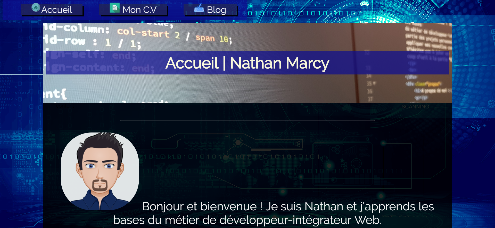
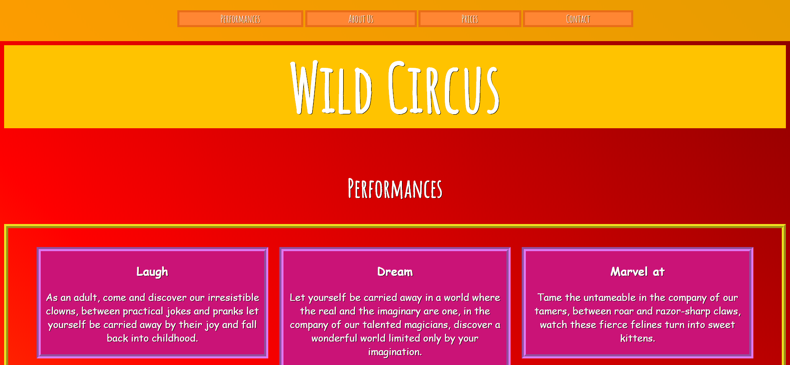

11 juillet 2018
Mise en ligne de mon projet de site "Portefolio"
Réalisation et mise en ligne de ce site, toujours sans l'aide d'un frameworks. Pour la mise en page du site j'utilise un positionnement Grid.
Ce projet me permet de confirmer mes connaissances en CSS et HTML tout en me permettant d'avoir un site "vitrine" des compétences acquises et de ma progression.
08 juillet 2018
Réalisation en HTML et CSS du projet de la Wild Code School
Toujours sans frameworks et à l'aide d'un éditeur de code, je réalise le projet "Wild Circus", épreuve d'admissibilité à la Wild Code School.
Le résultat correspond à la maquette initiale, répond aux consignes mais n'est pas responsive.
27 juin 2018

Après avoir apris les bases d'HTML et de CSS, je réalise mon premier projet, un cv en ligne
Pour la mise en page du site j'utilise un positionnement flexbox, le résultat est globalement conforme à la maquette dessinée sur papier et correspond à un CV photo classique.
Le CV est réalisé sans Frameworks, avec juste un éditeur de code.